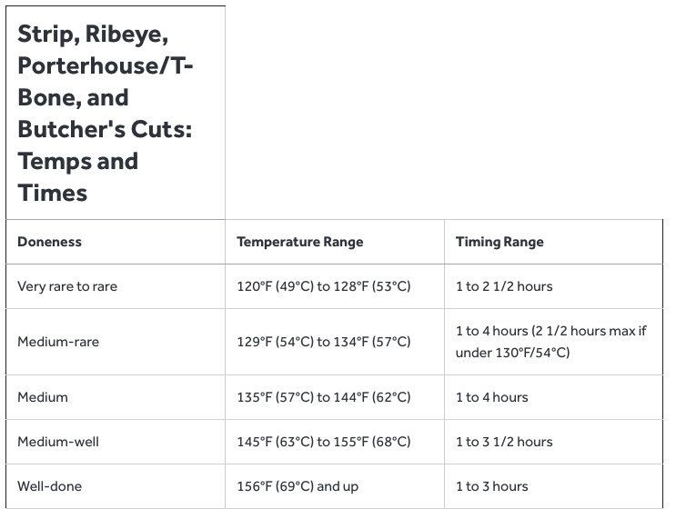
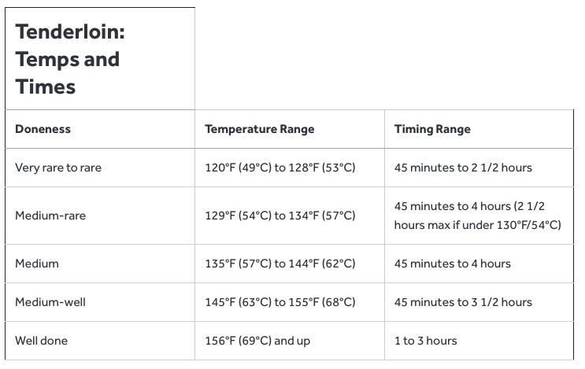

4 8oz tenderloin steaks
Kosher salt and freshly ground black pepper
4 sprigs thyme and/or rosemary
2 garlic cloves, sliced in half lengthwise
2 shallots, thinly sliced
2 Tbsp vegetable or canola
2 Tbsp butter
Preheat a sous vide cooker to desired final temperature. (See note for temperature and timing details, or view pictures attached to this recipe.)
Filet Mignon for Sam & Megan to both be happy - 132°F for 1:45 to 2:30
Season steaks generously with salt and pepper.
Place in sous vide bags along with herbs, garlic, and shallots (if using) and distribute evenly.
Seal bags and place in water bath for desired time according to charts.
To Finish in a Pan:
Turn on your vents and open your windows, this will get smoky.
Remove steak from water bath and bag and carefully pat dry with paper towels.
Add vegetable, canola, or rice bran oil to a heavy cast iron or stainless steel skillet, then place over the hottest burner you have and preheat skillet until it starts to smoke.
Gently lay steak in skillet, using your fingers or a set of tongs.
If desired, add a tablespoon of butter; for a cleaner-tasting sear, omit the butter at this stage.
After 15 to 30 seconds, flip steak so that the second side comes into contact with the pan.
Repeat, flipping steak every 15 to 30 seconds, until it has developed a nice brown sear, about 1 1/2 minutes total.
If you did not add butter earlier, add butter to skillet about 30 seconds before steak is done for added richness.
Bast with butter as needed or desired.
Serve steak immediately.
**To Finish on the Grill: **
Light one chimney full of charcoal.
When all the charcoal is lit and covered with gray ash, pour out and arrange coals on one side of charcoal grate.
Set cooking grate in place, cover grill, and allow to preheat for 5 minutes.
Alternatively, set half the burners on a gas grill to the highest heat setting, cover, and preheat for 10 minutes.
Clean and oil grilling grate.
Remove steak from water bath and bag and carefully pat dry with paper towels.
Place steak directly over hot side of grill and cook, turning every 15 to 30 seconds, until a deep, rich crust has formed, about 1 1/2 minutes total.
If the fire threatens to flare up as the steak drips fat into it, suffocate the fire by closing the grill lid until the flames die out.
Alternatively, transfer steak to cooler side of grill, using a set of long tongs, until flames subside.
Do not allow steak to become engulfed in flames.
Transfer cooked steak to a cutting board or serving platter and serve immediately.
12.21.2020 - Filet Mignon for Sam & Megan to both be happy - 132°F for 1:45 to 2:30
Temperatures & Bath Times


Sous Vide Filet Mignon Temperature:
- Rare: 120°F (49°C) to 128°F (53°C)
- Medium-Rare: 129°F (54°C) to 134°F (57°C)
- Medium: 135°F (57°C) to 144°F (62°C)
- Medium-Well: 145°F (63°C) to 155°F (68°C)
- Well Done: 156°F (69°C) and up
How Long Does It Take to Sous Vide Filet Mignon?
- Sous vide 1-inch thick steak for 1 hour
- Sous vide 1.5-inch thick steak for 1 hour, 45 minutes
- Sous vide 2-inch thick steak for 3 hours
- Sous vide 2.5-inch thick steak for 4 hours, 15 minutes